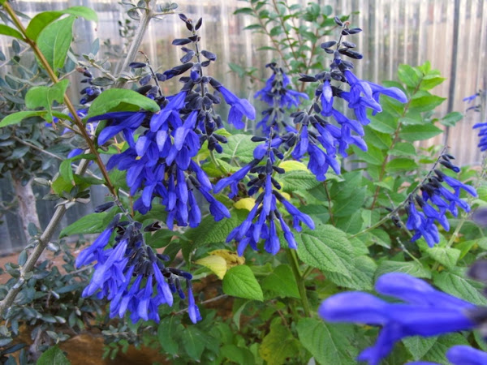

Hospederas
En las plantas hospederas las mariposas ponen sus huevos y de sus hojas se alimentan las orugas. Cada especie de mariposa tiene una (o varias) plantas hospederas específicas y no se alimentan de ninguna otra.
O sea que las orugas no van a comerte las demás plantas que tengas en tu jardín, como mucha gente piensa.
Asclepia Curassavica
Mas conocida como: Flor de sangre o Bandera Española
Hospedera de: Monarca y Reina
Mas conocida como: Flor de sangre o Bandera Española
Hospedera de: Monarca y Reina
Dicliptera squarrosa
Mas conocida como: Fosforito o Canario Rojo
Hospedera de: Bataraza
Mas conocida como: Fosforito o Canario Rojo
Hospedera de: Bataraza
Aristolochia trilobata
Mas conocida como: Patito coludo
Hospedera de: Borde de Oro
Mas conocida como: Patito coludo
Hospedera de: Borde de Oro
 Passifloras caerulea
Passifloras caerulea Mas conocida como:Mburucuya o Pasionaria
Hospedera de: Espejito
Austroeupatorium inulifolium
Mas conocida como: Mariposera o Chilca de olor
Hospedera de: Perezosa
Mas conocida como: Mariposera o Chilca de olor
Hospedera de: Perezosa
Asclepias mellodora
Mas conocida como: Flor de la vivora
Hospedera de: Monarca y Reina
Mas conocida como: Flor de la vivora
Hospedera de: Monarca y Reina
Araujia sericifera
Mas conocida como: Tasi o Planta cruel
Hospedera de: Monarca y Reina
Mas conocida como: Tasi o Planta cruel
Hospedera de: Monarca y Reina
Senna corymbosa
Mas conocida como: Sen de Campo
Hospedera de: Limoncito
Mas conocida como: Sen de Campo
Hospedera de: Limoncito
Scutia buxifolia
Mas conocido como: Coronillo
Hospedera de: Bandera Argentina
Mas conocido como: Coronillo
Hospedera de: Bandera Argentina
 Celtis ehrenbergiana
Celtis ehrenbergiana Mas conocido como: Tala
Hospedera de: Zafiro del Tala
Wedelia glauca
Mas conocida como: Sunchillo
Hospedera de: Dama manchada
Mas conocida como: Sunchillo
Hospedera de: Dama manchada
Nectaríferas
Las plantas nectaríferas, son plantas de flor, que proporcionan a las mariposas alimento en forma de néctar y polen.
Aunque algunas mariposas también se alimentan de frutas y verduras, también hay otras que NO se alimentan, ni siquiera tienen sistema digestivo, una vez que emergen como mariposas su único propósito es la reproducción.
Austroeupatorium inulifolium
Mas conocida como: Mariposera o Chilca de olor
Mas conocida como: Mariposera o Chilca de olor
Baccharis salicifolia
Mas conocida como: Chilca, Chilca amarga
Mas conocida como: Chilca, Chilca amarga
Lantana Camara
Mas conocida como: Lantana, Bandera Española
Mas conocida como: Lantana, Bandera Española
Lantana montevidensis
Mas conocida como: Lantana Rastrera o Morada
Mas conocida como: Lantana Rastrera o Morada
Solidago chilensis
Mas conocida como: Vara de Oro, Cola de Zorro
Mas conocida como: Vara de Oro, Cola de Zorro
Verbena bonariensis
Mas conocida como: Verbena de Buenos Aires, Verbena Argentina
Mas conocida como: Verbena de Buenos Aires, Verbena Argentina
Nicotiana longiflora
Mas conocida como: Flor de sapo, Flor de la Tarde
Mas conocida como: Flor de sapo, Flor de la Tarde
 Salvia guaranitica
Mas conocida como: Salvia Azul
Mas conocida como: Salvia Azul
Calendula officinalis
Tambien conocida como: Calendula o Marigold
Tambien conocida como: Calendula o Marigold
Lavandula dentata
Mas conocida como: Lavanda
Mas conocida como: Lavanda
Cosmos sulphureus
Tambien conocida como: Mirasol Amarillo
Tambien conocida como: Mirasol Amarillo